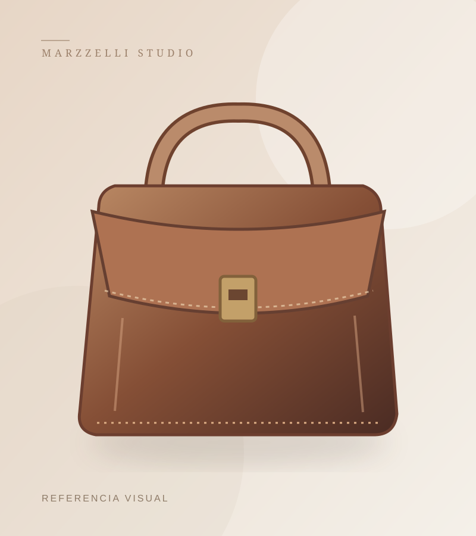

CONFECCIÓN PERUANA · CUERO Y TEXTILDiseño que se lleva.
Diseño que se lleva.
Calidad que se siente.
En MARZZELLI confeccionamos carteras, mochilas, calzado y accesorios para dama y caballero. Diseños funcionales hechos con cuero, textiles o la combinación de ambos.
08 Líneas del catálogo02 Materiales destacados
MARZZELLI COL. 01 / CATÁLOGO

Piezas con carácter ✳
EXPLORA NUESTRAS LÍNEAS
Un producto para cada momento.
Explora nuestras categorías, creadas para el uso diario, la oficina y las ocasiones especiales.


SELECCIÓN MARZZELLI
Ver catálogo completo ↗Descubre nuestras propuestas.
FABRICACIÓN Y DISEÑOCuero y textil.
Cuero y textil.
Una misma pasión.
Fabricamos artículos que reúnen utilidad, diseño y atención al detalle. Conoce las líneas de productos que forman parte de MARZZELLI.
Conoce nuestra historia →MARZZELLI
CUERO
TEXTIL
DISEÑO
¿TIENES UNA CONSULTA?
Ir a contacto →Estamos listos para conversar.
Selecciona modelos y prepara una consulta referencial desde nuestra web.